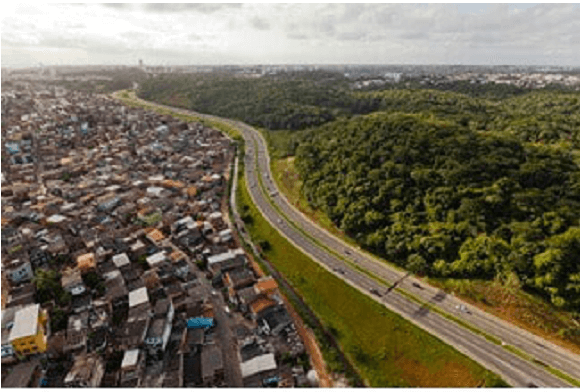
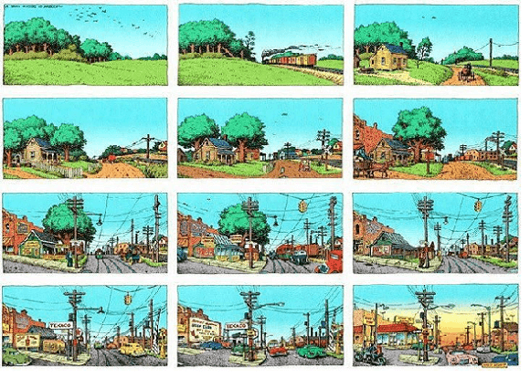
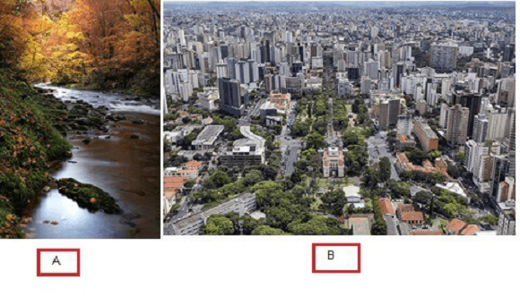
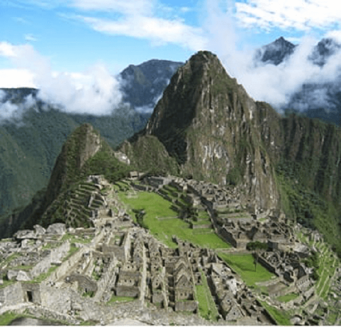
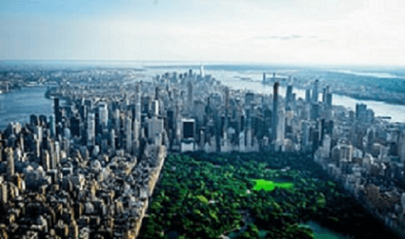
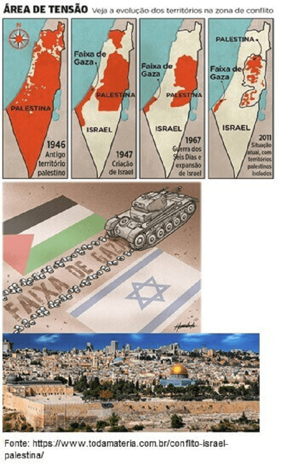
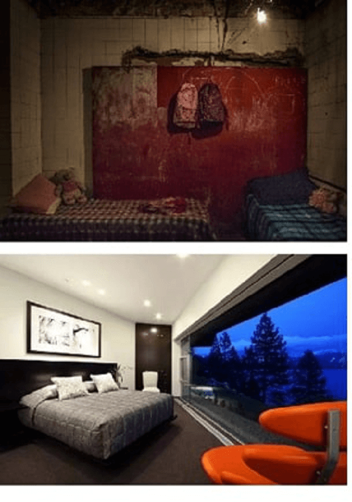
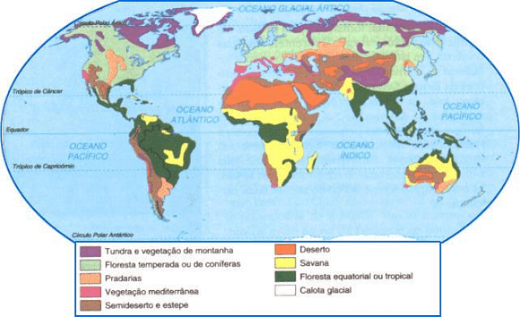
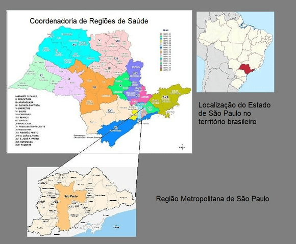

Conteúdo:
Objetivo: Entender como estão relacionados os conceitos fundamentais da Geografia na explicação das desigualdades socioespaciais presentes no mundo atual.
Introdução
Oestudo da Geografia pode ser representado de acordo com o movimento da imagem acima: no início uma superfície terrestre sem modificações pelo homem. Com o passar do tempo, a capacidade de modificar a natureza se intensifica através do acréscimo de objetos fabricados pelos homens, como estradas, energia elétrica e indústrias.
Assim temos um novo mundo criado e organizado de maneira distinta, à depender do grau de tecnologia e da influência dos objetos, naturais ou sociais em uma determinada porção da superfície terrestre.
A Geografia contribui para entendermos essa relação entre o homem e natureza, que foi transformada pelo trabalho humano.
Sabemos que há uma distribuição desigual dos objetos pelo globo terrestre, tanto o clima e a vegetação como as infraestruturas de transportes ou acesso ao sistema de saúde.
Nesta aula, veremos como a Geografia dispõe de verdadeiras ferramentas para explicar a dinâmica social repleta de desigualdades através do espaço geográfico.

Ao final, entenderemos como o espaço em que vivemos influencia na formação das sociedades, dos países, das cidades ou do próprio bairro em que moramos.
Como que a Geografia faz isso? Mas afinal de contas, o que é Geografia?
Agora é com você!
Você estudou Geografia desde o ensino primário. Fez exercícios sobre o seu local de moradia (maquete de sua casa), desenhou um mapa do seu bairro e estudou seu município.
No ensino fundamental conheceu as diferentes paisagens e continentes em direção a um mundo conectado, isto é, globalizado.
Agora no Ensino Médio, vai aprofundar essas relações no conhecimento do mundo natural, do Brasil e do mundo na era da globalização.
A partir disso, escreva em seu caderno 5 palavras (sem a preocupação com o significado neste momento) sobre o que acha que é Geografia.
Escolha a alternativa correta:
O objeto de estudo da Geografia é o:
Questione a realidade!
Dentre as diversas palavras sobre o que a Geografia estuda anotadas no caderno, temos: espaço geográfico, climas, mapas, montanhas, lugar, território, vegetação, região, globalização, paisagens etc.
Nesse exercício você vai treinar sua habilidade de fazer perguntas. A Geografia estuda tudo isso, mas não de forma desorganizada!
Ela utiliza ferramentas chamadas conceitos. Esses conceitos estão destacados acima.
Elabore em seu caderno uma pergunta para cada um deles. Por exemplo:
- Desde quando existe o território?
- Para que serve a região?
- Qual a relação deste conceito com a política ou o poder?
E assim por diante. Não se preocupe com as respostas neste momento.
Anote ai:
A Geografia estuda a realidade por meio de seu conceito geral chamado Espaço Geográfico e de seus auxiliares principais:
- Território
- Paisagem
- Lugar
- Região
Espaço geográfico - A Geografia estuda a realidade a partir desse conceito principal e de seus auxiliares.
Esse espaço humano está ligado aos objetos visíveis nas paisagens, como casas, indústrias, igrejas etc., mas também aos invisíveis, como dinheiro, informação, comunicação, dentre outros.
O que permite a modificação da superfície terrestre pelo homem é a técnica. E o espaço geográfico incorpora e reflete o grau de desenvolvimento técnico de cada sociedade.
Assim, os objetos criados pela técnica permitem as ações humanas se manifestarem e organizarem espacialmente a sociedade. Exemplo: os eventos culturais precisam de um objeto para serem realizados, um teatro, praça ou uma rua.
Veja abaixo o processo de transformação desse espaço geográfico.

Portanto, o Espaço Geográfico é um conjunto indissociável de sistemas de objetos e sistemas de ações.
Leia a citação abaixo:
“Durante a Guerra Fria, os laboratórios do Pentágono chegaram a cogitar a produção de um engenho, a bomba de nêutrons, capaz de aniquilar a vida humana em uma dada área, mas preservando todas as construções. O presidente Kennedy afinal renunciou de levar a cabo esse projeto. Senão, o que na véspera seria ainda o espaço, após a temida explosão seria apenas paisagem.”
SANTOS, 2002. Foto: O Globo.Esse episódio da bomba de nêutrons mostra a diferença entre esses dois conceitos, espaço e paisagem.
Paisagem - É tudo aquilo que vemos, o que a visão alcança em um lance de olhar. É formada de volume, mas também de odores, sons, movimentos, ou seja, pelo o que os sentidos captam.
Ela pode ser natural (com a presença de montanhas, rios ou vegetação) ou social (repleta de prédios, casas ou hospitais).
A paisagem é o ponto de partida do estudo do Espaço geográfico.
Teste suas habilidades!

a) Quais elementos estão presentes na foto A ? E quais os elementos estão evidentes na foto B?
Os elementos naturais também provocam alterações nas paisagens, mesmo que demorem milhares de anos para ocorrer, como o desgaste do relevo de uma montanha pelo vento.
As paisagens humanizadas ou antrópicas são o resultado do trabalho humano na superfície terrestre.
Esse trabalho resulta em várias formas ou objetos que persistem no tempo e que podemos identificar em diferentes paisagens pelo mundo.

Na foto acima vemos Machu Picchu ("velha montanha"), também chamada "cidade perdida dos Incas", é uma cidade pré-colombiana bem conservada, localizada no topo de uma montanha, a 2 400 metros de altitude, no vale do rio Urubamba, atual Peru.
A leitura dessa paisagem através da observação, análise e interpretação de seus elementos podem nos ajudar a entender como era a forma de organização social, cultural, territorial e política dessa cidade.
As paisagens registram as várias transformações da natureza e da sociedade realizada pelos homens. Ela acumula diferentes “tempos” em seus elementos. E pode conter o antigo junto ao novo.

O Central Park é um grande parque dentro da cidade de Nova Iorque. Possui uma área de 3,41 km² e está localizado no distrito de Manhattan.
Foi inaugurado em 1857 e sua paisagem revela o grande poder técnico do homem em transformar a natureza.
Embora o parque pareça natural, ele é, na verdade, ajardinado quase inteiramente e contém diversos lagos artificiais, trilhas para caminhadas, duas pistas de patinagem no gelo, um santuário vivo e campos diversos.
Os grandes edifícios, os escritórios, o poder econômico da cidade de Nova Iorque no mundo mostram que as leis da natureza já não exercem o total domínio no ritmo de vida da sociedade do século XXI.
Alguns objetos como casas rurais foram substituídas por lojas modernas de departamento ou teatros famosos.
Os elementos naturais, como o rio Hudson que desemboca no Oceano Atlântico, influenciam a organização do espaço geográfico e também serve como fronteira entre Estados, países ou territórios.
Escolha a alternativa correta:
Pode-se inferir do texto acima que a paisagem é constituída ao longo do tempo:
Território - Está intimamente relacionado com o espaço e poder. É comumente entendido como uma área delimitada por fronteiras.
A partir dessa configuração de poder são gerados conflitos para controlar um determinado espaço e seus recursos, sejam eles naturais ou sociais.
Trata-se de uma porção do espaço geográfico onde relações hierárquicas se estabelecem.
Na foto abaixo temos o exemplo da disputa por território por décadas entre os país de Israel e o povo da Palestina, este último ainda sem Estado reconhecido.

Ao longo do tempo o conflito entre distintas visões de mundo, religioso (Israel representando o Judaísmo e a Palestina o Islamismo) e poder econômico e político alterou a delimitação do espaço em diversos territórios.
O território, portanto, não é somente uma área delimitada por uma espécie animal, mas também adquiriu contornos políticos.
Quando um grupo de pessoas, instituições, empresas etc. apropriam-se de um espaço e constroem regras para seu uso, delimitam fronteiras, que devem ser seguidas por todos aqueles inseridos naquele espaço, elas definem um território.
Leia a citação abaixo:
É por meio da análise da construção histórica de um determinado território que podemos reconhecer a origem das desigualdades no espaço, a destruição da cultura ou de povos indígenas ou o domínio de um povo sobre outro atualmente.
Em sua cidade, dê exemplos de territórios ocupados por grupos sociais. Quais conflitos por território você já ouviu falar? Esses conflitos podem afetar bastante o lugar em que vivemos.
Lugar - Trata-se da porção do espaço geográfico com a qual os sujeitos convivem diretamente e possuem uma ligação mais estreita, como o local de moradia, do trabalho, do lazer etc.
O nosso quarto constitui um dos exemplos da porção do espaço geográfico em que temos relações diretas de pertencimento, embora nem todos apresentem a mesma infraestrutura.

Da mesma forma, o lugar recebe os impulsos globais, alterando o cotidiano e as relações estabelecidas historicamente entre a comunidade e seu entorno.
Um exemplo diz respeito à chegada de uma empresa transnacional, como uma grande firma do setor automobilístico, em uma pequena cidade.
O lugar participa dessa relação entre a escala global e a local, e revela as transformações desses eventos na sua infraestrutura, circulação, comércio, serviços etc.
O assunto sobre as escalas geográficas e cartográficas será visto nas próximas aulas.
Identifique os lugares, na cidade ou no campo, com os quais você possui relações diretas, seja na área de lazer, estudo, trabalho, deslocamentos, dentre outros.
Região – No passado, a noção de região compreendia a união de elementos com características comuns, como clima, vegetação ou tipo de solo. De acordo com o interesse do pesquisador, escolhia-se um determinado critério e dividia-se o espaço em regiões, tal como no mapa abaixo sobre a vegetação mundial:

No período atual, pode ser entendida como o resultado da expansão da globalização que fragmenta o espaço total em partes funcionais, isto é, áreas responsáveis por desempenhar um papel específico, seja na produção, comercialização ou distribuição de mercadorias na atual dinâmica do capitalismo. Ou como escreveu o grande geógrafo Milton Santos:
Veja o mapa abaixo sobre as possibilidades de se regionalizar o espaço geográfico:

Fonte: COSEMS/SP - Conselho de Secretarias Municipais de Saúde (Adaptado).
Não existe pergunta boba! A Ciência é feita de perguntas!
P: A Geografia estuda o espaço onde ficam as estrelas e os planetas? O espaço sideral?
R: É uma boa pergunta. A Geografia estuda o espaço geográfico, o espaço humano. Conforme vimos, a presença do homem, de suas ações com os objetos naturais e sociais são fundamentais para a existência do espaço geográfico, das paisagens transformadas pelo trabalho do homem. Sendo assim, o espaço dos astros, dos planetas não é o que caracterizaria o estudo da Geografia, não diretamente, pois precisamos do elemento humano nesse contexto.
P: Poderia explicar melhor a diferença entre Lugar e Região?
R: Vamos pensar no Espaço geográfico como algo que envolve a todos nós, isto é, uma totalidade sempre em movimento. Entretanto, não vivemos em todo o espaço geográfico, mas sim em algumas de suas partes. O Lugar, de modo geral, é aquela porção do espaço onde realmente existimos, temos experiências e vivências cotidianas com outras pessoas, como em nossa casa, nosso bairro, ou em um parque. Já a região é, da mesma forma, uma porção do espaço total, mas ela foi criada a partir de um interesse e segundo critérios específicos. Existe, por exemplo, a região do Cerrado brasileiro, delimitada a partir da vegetação típica que ela apresenta. Ou a região das pessoas sem acesso ao saneamento básico, no qual foram utilizados um critério social e outro sanitário. Esse assunto também está ligado a escala geográfica e cartográfica que veremos mais adiante.
P: Por que é importante estudar Geografia?
R: A Geografia é tão antiga quanto a própria História, e porque não dizer da curiosidade do homem pelo seu mundo. No passado, as grandes conquistas, batalhas e relatos de viagens, fascinavam os povos e seus governantes. Nesse sentido, o estudo da Geografia foi (e ainda é) uma forma de descobrir como o espaço inimigo era organizado, onde estavam localizados os seus exércitos, seu armamento, enfim, sua estratégia de domínio do território. Hoje, as transformações no mundo são extremamente rápidas, desde o local, representado pelo nosso bairro, até o global, quer dizer, o mundo todo. Dessa forma, dependendo da maneira como organizamos nosso meio, teremos uma sociedade mais justa ou uma repleta de desigualdades. Todo esse conhecimento vai refletir no exercício de nossa cidadania, que é, de modo geral, a capacidade de participarmos da transformação da realidade em que vivemos, seja qual for a porção do espaço geográfico em que estamos localizados.
Já podemos finalizar esta aula!

Para saber mais:
Referências Bibliográficas
SANTOS, Mílton.
Por uma outra globalização: do
pensamento único à consciência universal.
Rio de Janeiro: Record, 2000.
SANTOS, Milton.
O espaço do cidadão.
São
Paulo:
Editora da USP, 2007.
VOGLER, Christopher.
A jornada do escritor.
Rio
de
Janeiro: Nova Fronteira, 2006.
BRASIL. Ministério da Educação.
Base Nacional Comum
Curricular.
Brasília: MEC/Secretaria de Educação Básica, 2018.